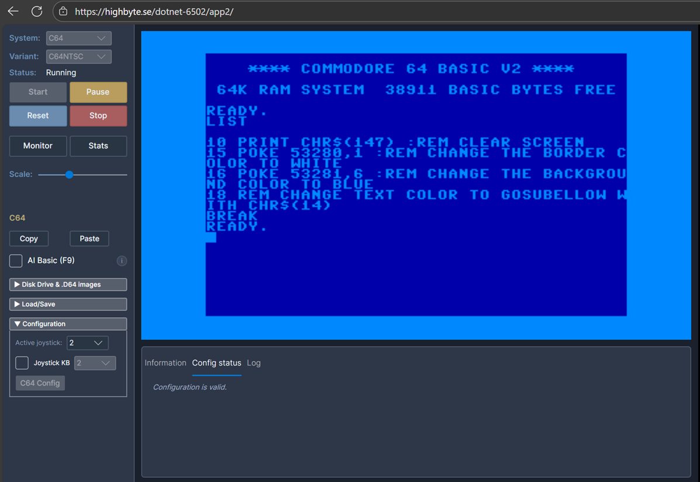
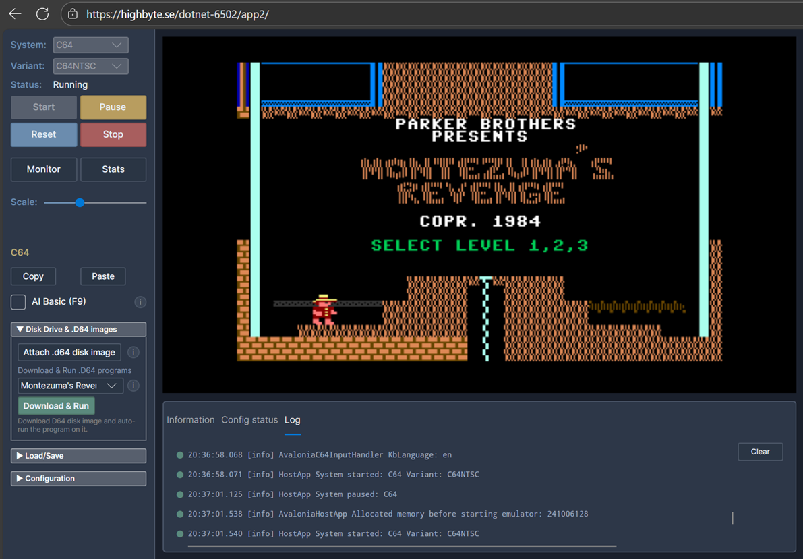
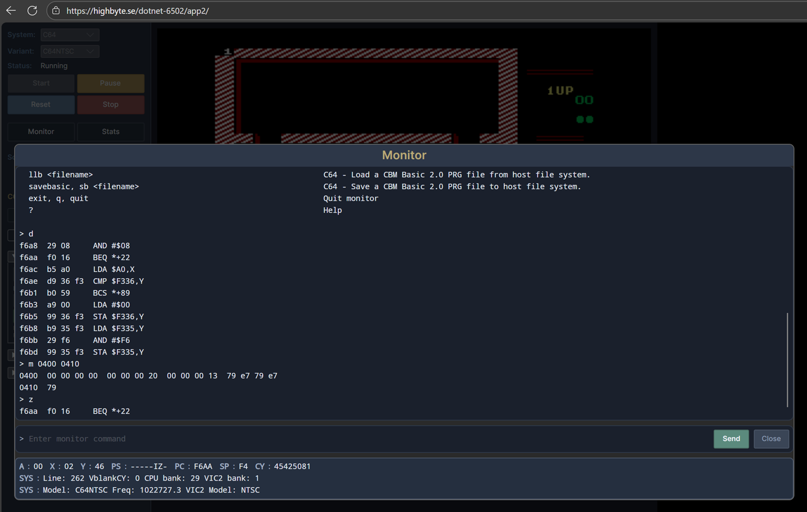

Avalonia Browser app¶
Overview¶
Cross-platform browser app written with Avalonia UI. Shares almost all code (including UI) with the Avalonia Desktop app.



Technologies:
- UI:
AvaloniaUI controls. - Rendering:
Highbyte.DotNet6502.Impl.Avalonia. - Input:
Highbyte.DotNet6502.Impl.Avalonia+Highbyte.DotNet6502.Impl.Browser(gamepad). - Audio:
Highbyte.DotNet6502.Impl.NAudio. Synthesizer viaNAudioand playback via WebAudio JS interop.
Live version: https://highbyte.se/dotnet-6502/app2
Install¶
The browser app runs entirely in the browser — no installation required. Open the live version and start the emulator from the UI.
To self-host, see Run from command line below.
Features¶
System: C64¶
-
Via the C64 config UI you have to upload binaries for the ROMs that a C64 uses (Kernal, Basic, Chargen). Or use the convenient auto-download functionality (with a license notice). For details on ROM files, see Systems / C64 / ROMs.
-
Renderer provider
Rasterizer→ targetAvalonia 2-layer bitmap- Character mode (normal and multi-color).
- Bitmap mode (normal and bitmap mode).
- Sprites (normal and multi-color).
- Rendering of raster lines for border and background colors.
-
Renderer provider
Video commands→ targetSkia commands- Character mode (normal).
-
Input using
Avalonia. Keyboard usesAvalonia.Input.PhysicalKey(W3Ccode), so bothUSandSwedishC64 keyboard layouts work; in Chromium browsers the layout is auto-detected vianavigator.keyboard.getLayoutMap()(other browsers fall through to OS culture, then US). Layout can be overridden in the C64 config dialog. See Systems / C64 / Keyboard mapping for the full host-agnostic mapping. - Audio via NAudio synthesizer.
System: Generic computer¶
The example 6502 machine code that is loaded and run by default for the Generic computer is an assembled version of this 6502 assembly code.
Lua scripting¶
The browser app supports the same Lua scripting API as the Avalonia Desktop app, except for filesystem and TCP access (the browser sandbox does not allow them; the key/value store falls back to localStorage). For the full guide, see Tools / Scripting.
URL query parameters¶
The Avalonia Browser app supports URL-driven startup automation. This is the browser counterpart to the Avalonia Desktop app's CLI arguments: instead of passing --system or --script, you encode the request in the page URL query string.
Query parameter names are case-insensitive. Boolean flags treat an empty value, 1, true, and yes as true.
| Query parameter | Purpose | Notes |
|---|---|---|
system |
Pre-select a system such as C64 or Generic. |
Mirrors desktop --system. |
systemVariant |
Pre-select a system variant. | Requires system. Mirrors desktop --systemVariant. |
start |
Auto-start the selected system. | Requires system. Mirrors desktop --start. |
waitForSystemReady |
Wait until the system reports ready. | Requires system and start. Mirrors desktop --waitForSystemReady. |
loadPrgUrl |
Fetch a .prg over HTTP and load it into memory. |
Requires system and start. Browser equivalent of desktop --loadPrg, but uses a URL instead of a local file path. Relative URLs are resolved from the app origin. |
runLoadedProgram |
Start executing the loaded PRG from its load address. | Requires loadPrgUrl. Mirrors desktop --runLoadedProgram. |
basicText |
Paste inline C64 BASIC source text into the running C64. | Base64url-encoded UTF-8 text. Requires system=C64, start, and waitForSystemReady. Mutually exclusive with loadPrgUrl and runLoadedProgram. |
basicUrl |
Fetch C64 BASIC source text over HTTP and paste it into the running C64. | Same semantics as basicText, but uses a text file URL instead of embedding the source in the query string. |
runBasic |
Queue RUN after BASIC source has been pasted. |
Requires basicText or basicUrl. |
script |
Run an inline Lua script supplied as base64url-encoded UTF-8 text. | Browser only. Mutually exclusive with all system-driven parameters below. Disabled by default; gated by Scripting.AllowUrlScripts. |
scriptUrl |
Fetch a Lua script from a relative or absolute URL and run it. | Same behavior as script, but avoids URL-length limits. Disabled by default; gated by Scripting.AllowUrlScripts. |
Validation rules are intentionally forgiving: invalid combinations are ignored and the normal UI still loads.
When a URL starts system=C64 and the app does not yet have the required C64 ROMs, the browser startup flow prompts the user to acknowledge the ROM download terms and can download the ROMs before continuing. This lets first-run automation links work without opening the C64 config dialog first.
systemVariantrequiressystem.startandwaitForSystemReadyrequiresystem.waitForSystemReadyrequiresstart.loadPrgUrlrequiressystemandstart.runLoadedProgramrequiresloadPrgUrl.basicTextandbasicUrlare mutually exclusive.basicTextandbasicUrlrequiresystem=C64,start, andwaitForSystemReady.basicTextandbasicUrlare mutually exclusive withloadPrgUrlandrunLoadedProgram.runBasicrequiresbasicTextorbasicUrl.scriptandscriptUrlare mutually exclusive.scriptandscriptUrlare also mutually exclusive withsystem,start,waitForSystemReady,loadPrgUrl,runLoadedProgram,basicText,basicUrl, andrunBasic.
Examples:
# Start C64 PAL and wait until the machine is ready
?system=C64&systemVariant=PAL&start=1&waitForSystemReady=1
# Load and run a bundled PRG
?system=C64&start=1&waitForSystemReady=1&loadPrgUrl=prg/c64/smooth_scroller_and_raster.prg&runLoadedProgram=1
# Paste BASIC source from a browser-served text file and run it
?system=C64&start=1&waitForSystemReady=1&basicUrl=basic/c64/hello-world.bas&runBasic=1
# Paste the same BASIC source inline and run it
?system=C64&start=1&waitForSystemReady=1&basicText=MTAgYzE9NzpjMj0xNAoyMCBjPWMxCjMwIGlmIGM9YzEgdGhlbiBjPWMyIDogZ290byA1MAo0MCBpZiBjPWMyIHRoZW4gYz1jMQo1MCBwb2tlIDUzMjgwLGMKNjAgcHJpbnQgImhlbGxvIHdvcmxkISIKNzAgZm9yIGk9MSB0byAxNTA6bmV4dAo4MCBnb3RvIDMwCg&runBasic=1
# Run an inline Lua script (base64url for: log.info('hello'))
?script=bG9nLmluZm8oJ2hlbGxvJyk
# Run a Lua script fetched over HTTP
?scriptUrl=scripts/example_emulator_control.lua
The browser app ships the basicUrl sample above as basic/c64/hello-world.bas, containing:
10 c1=7:c2=14
20 c=c1
30 if c=c1 then c=c2 : goto 50
40 if c=c2 then c=c1
50 poke 53280,c
60 print "hello world!"
70 for i=1 to 150:next
80 goto 30
Important differences from desktop automation:
loadPrgUrl,basicUrl, andscriptUrluse browser HTTP fetch semantics, so normal browser origin and CORS rules apply.basicTextandbasicUrlare C64-only and use the normal keyboard paste path after BASIC is ready;runBasic=1simply appendsRUNand Return after the pasted source.- URL-driven Lua is disabled by default. Enable Allow URL-driven scripts (script / scriptUrl query params) in the browser app's general settings, save, then reload the page.
- URL-driven scripts do not behave exactly like desktop
--script: the browser app still selects the configured default system first, then enables the injected script. The script can still take over by calling APIs such asemu.select(...)andemu.start().
How to run locally for development¶
For development system requirements, see Development.
Visual Studio (Windows)¶
Open solution dotnet-6502.sln. Set project Highbyte.DotNet6502.App.Avalonia.Browser as startup, and start with F5.
Important
Running a Debug build of the Avalonia Browser app is very slow. To get acceptable performance a published release build with AOT is required. The Avalonia Desktop app has ok performance in Debug mode, so using the Desktop app when developing and testing locally is recommended.
Run from command line¶
Run Debug build (very slow)¶
Open browser at http://localhost:5000.
Run optimized Publish build (AOT)¶
To serve the published build, the example below uses the .NET global tool dotnet-serve. Install with dotnet tool install --global dotnet-serve.
cd ./src/apps/Avalonia/Highbyte.DotNet6502.App.Avalonia.Browser
if(Test-Path ./bin/Publish/) { del ./bin/Publish/ -r -force }
dotnet publish -c Release -o ./bin/Publish/
dotnet serve -o:/ --directory ./bin/Publish/wwwroot/
A browser is automatically opened.